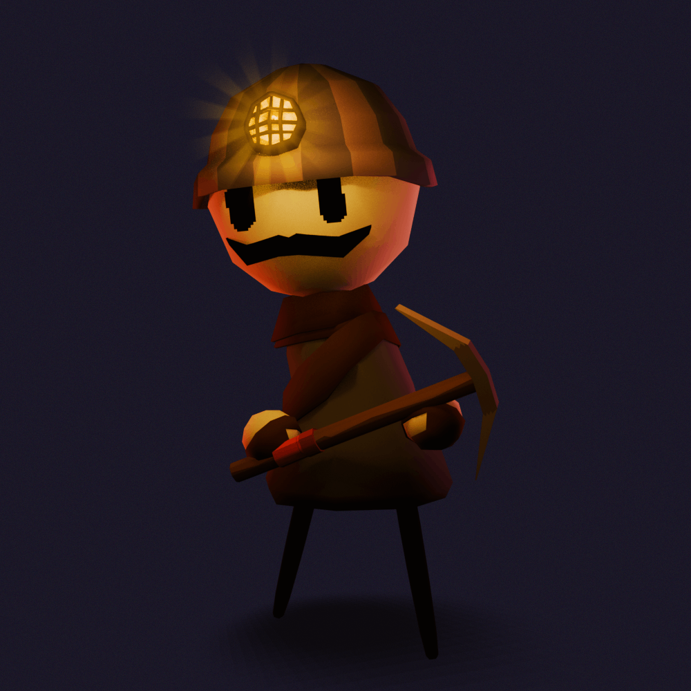
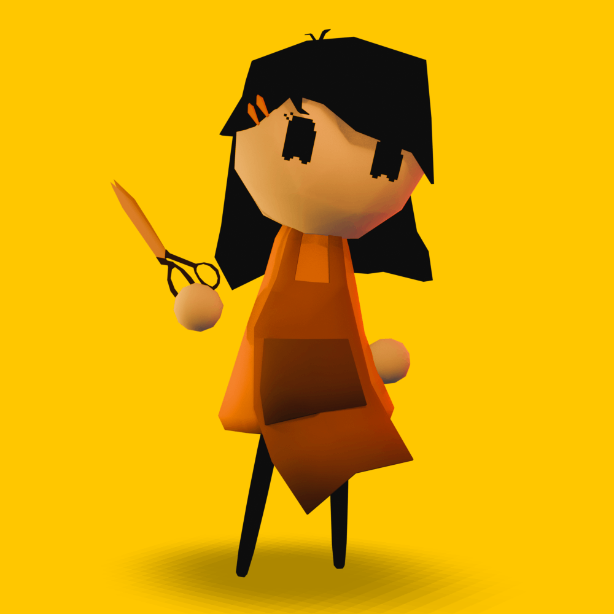
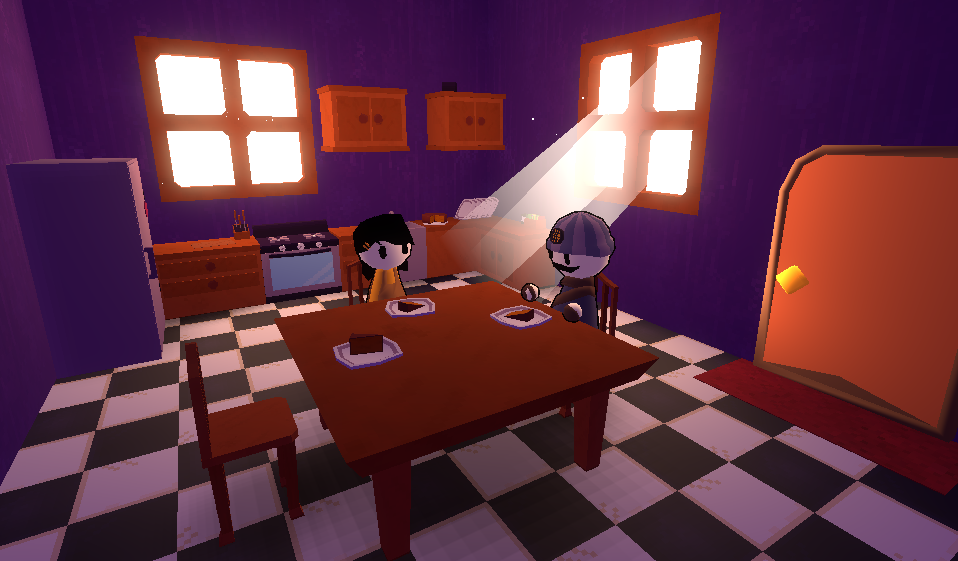
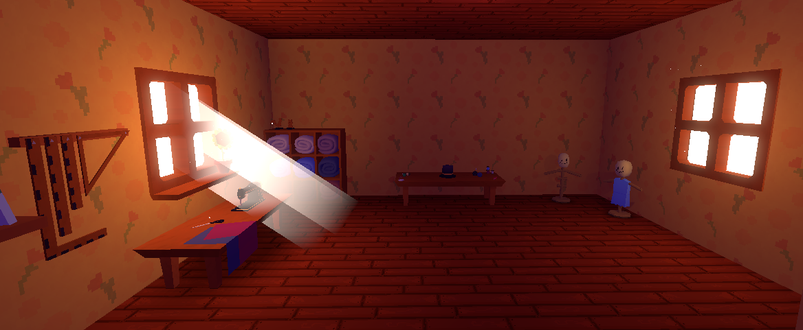
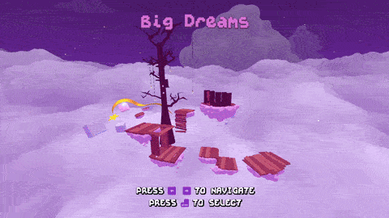
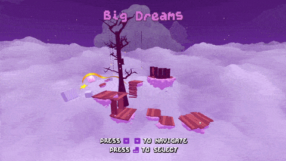

The newsletter is back once again for the 9th issue!
Check out what I made
The biggest update of this month is the two new important story characters, Flute's parents.

Flute's Father
Flute's father is a hard-working miner. He works to gather valuable resources from islands surrounding Maple Isle.
Although he may look pretty brutal, he's actually really sweet and funny if you know him. He's working most of the time so Flute doesn't see him much apart from breakfast and dinner, for now...

Flute's Mother
Flute's mother is a seamstress and hat maker. Everything that Flute's family wears is made by Flute's mother.
She often gets orders from the people of Maple Isle and sometimes even surrounding islands. Her newest work is a top hat for the mayor of Maple Isle, but someone has to deliver it...
Once again I worked on the interior of Flute's house this month (last time I put this in the newsletter probably) and updated the kitchen and Mom's studio.

Kitchen with parents

Mom's Studio
Level Select is now fully functional and I've decided to hide the names of islands you haven't yet visited.

Navigating the level select
Once you go into an island you can select each part and it will change depending whether you've finished it or not.

Big Dreams in the level select
Flute's new voice
Flute has a new voice because I thought the new version sounded nicer when combined with the voices of Flute's parents.
Flute's Old Voice
Flute's New Voice
Attack Knockback
Flute now has attack knockback when they get damaged. Also I've been experimenting with making Flute's attacks slightly move flute backward or forward and I'm considering redoing the combat slightly.
Thank you for reading the newsletter once again! For the next month I'll try to do more gameplay stuff instead of making more assets.
Anyways I'll see you next time on the 31st of October (spoOky....)
Bye bye!!!
here's the music that plays in the level select when you are selecting a part